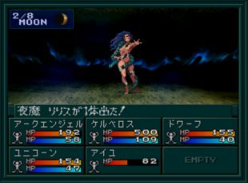
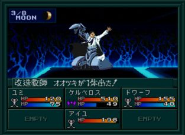

- 시설
- 공략
- 질투계 2F
- 질투계 3F
- 질투계 4F
- 질투계 6F
- BOSS:야마 리리스
- 리리스와 전투 이후
- BOSS:개조교사 오오츠키2
시설
- 2F : 무기, 방어구, 도구, MAG(1 MAG = 10 마카로 교환 가능), 회복, 사교의 관, 운세
- 4F : 회복
공략
질투계는
특수 보상이 있는데 주인공의 가디언이 로우/카오스 히어로가 아니라면 내용물은 모두 소마가 된다.
1F에서 어느 정도 진행하다보면 이벤트가 발생하고 파트너가 이탈하게 된다.
1F → 2F(발판) → 1F → 2F 순서로 진행하자.
질투계 2F
두 번째로 올라오는 2F은 COMP가 사용 불가능이다. 지도를 보고 따라가서 3F으로 올라가자.
질투계 3F
COMP가 사용 불가능이 된다.
워프를 통해서 W1~W6로 가면 위로 올라가는 계단이 있다.
질투계 4F
4F에는 히노카구츠치(ヒノカグツチ)가 있다. 주인공의 가디언이 상위 3위 또는 가디언이 없는 경우 히노카구츠치를 얻을 수 있다. 주인공의 가디언이 없다는 것은 여기까지 진행하면서 한번도 죽지 않아야 된다.
3F과 마찬가지로 워프를 통해 W1~W9로 이동하자.
질투계 6F
5F과 6F은 복잡하지 않으니 길 따라 올라오면 된다. 6F에서
BOSS:야마 리리스와 전투(질문에 모두 YES, NO를 선택하면 처음으로 돌아가버린다.)
BOSS:야마 리리스

| 이름 |
Lv52 夜魔リリス |
| HP |
888 |
| 마법/특기 |
ムド／マハブフダイン／ドルミナー／マリンカリン／デカジャ／吸血／悪魔のキス |
리리스는 주살, 정신계 마법을 사용한다. 상성이 있는 방어구를 필수로 착용하자. 학교에서 얻을 수 있는 케르베로스가 있다면 쉽게 처리할 수 있다.
리리스와 전투 이후
파트너 복귀 후 2F 타운 북동쪽의 방에서 마계 아저씨로부터 무상 마사무네(無想正宗)를 얻을 수 있다. 만일 이전에 만나버려서 대화를 해버리면 받을 수 없게 된다. 무조건 클리어 이후에 찾아가자.
질투계를 돌아다니다 보면 특정 포인트에서
BOSS:개조교사 오오츠키2와 전투할 수 있다.
BOSS:개조교사 오오츠키2

| 이름 |
Lv46 改造教師オオツキ |
| HP |
777 |
| 마법/특기 |
ハンマーパンチ／鉄拳パンチ／押し潰し／連射撃ち／守る |